Paket 2 · Kampf, Figuren und Gesundheitsanzeigen
PAKET 2 · 844 × 390 CSS-PIXEL
Spieler-HP und Bodenmarkierung · Querformat
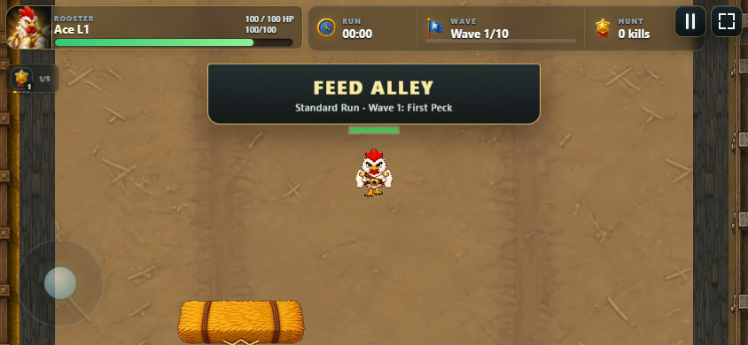
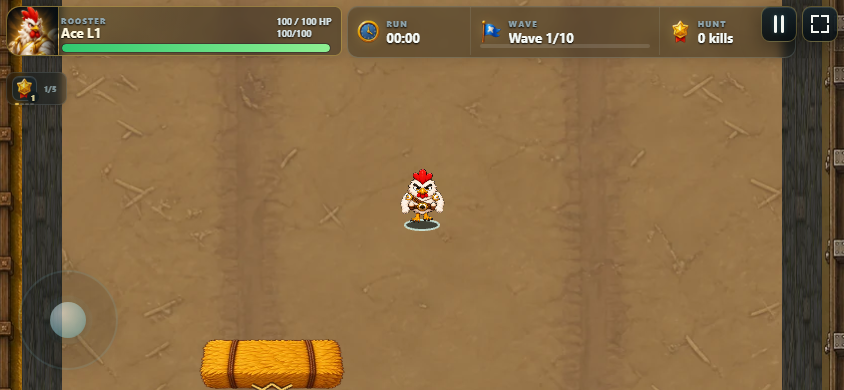
Vergleichbarkeit: Gleicher Hahn, gleiche Arena und Fenstergröße. Die Startmeldung ist nur links aktiv; ihr Fehlen rechts ist kein Beleg für eine generelle Entfernung.
Nachher besser
Der schwebende HP-Balken entfällt; die Gesundheit bleibt oben gut sichtbar. Der ruhige Bodenmarker gibt der Figur einen klareren Kontaktpunkt. Das reduziert konkurrierende Elemente direkt am Hahn und entspricht deiner gewünschten HUD-Lösung.
Abwägung / offen: Figurenkunst, Kamerazoom und Spielergeometrie wurden nicht verbessert oder vergrößert. Die Startmeldung lässt sich separat im Bossvergleich beurteilen.
PAKET 2 · 390 × 844 CSS-PIXEL
Spielerlesbarkeit · Handy-Hochformat
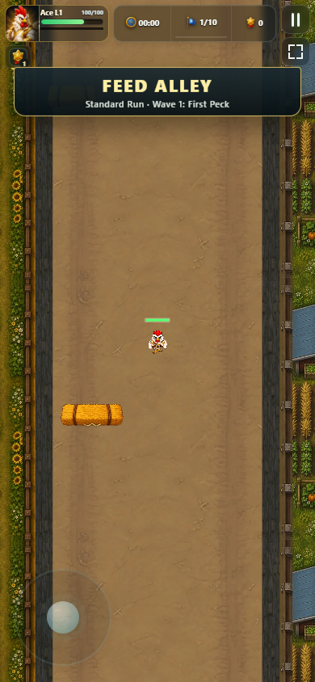
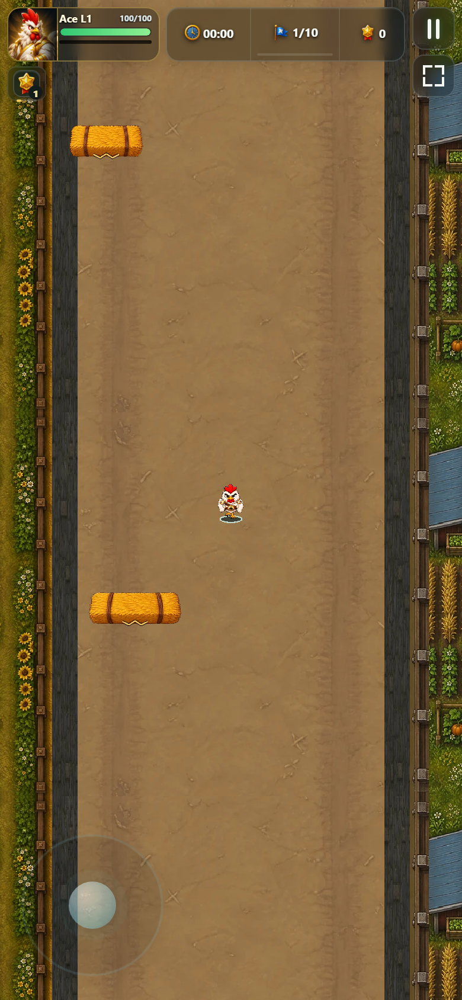
Vergleichbarkeit: Beide Bilder werden gleich groß gezeigt. Rechts wurde mit doppelter Pixeldichte aufgenommen. Startmeldung und einzelne Mapobjekte unterscheiden sich; dies ist kein pixelgleicher Szenenvergleich.
Nachher ruhiger; Größe bleibt kritisch
HP nur im HUD vermeidet eine zweite Gesundheitsanzeige über der sehr kleinen Figur. Die Bodenellipse hilft beim Wiederfinden. Das ist ein sinnvoller Gewinn an Ruhe, aber kein Nachweis, dass die Figur auf einem echten Telefon ausreichend lesbar ist.
Abwägung / offen: Ace bleibt etwa 28–30 CSS-Pixel hoch. Vor einer weiteren Skalierungsentscheidung müssen Figur, Blickrichtung und Ausweichen auf echten Telefonen geprüft werden. Die höhere Screenshot-Schärfe rechts zählt nicht als neue Assetqualität.
PAKET 2 · 960 × 540 CSS-PIXEL
Bossmeldung und volles Loadout
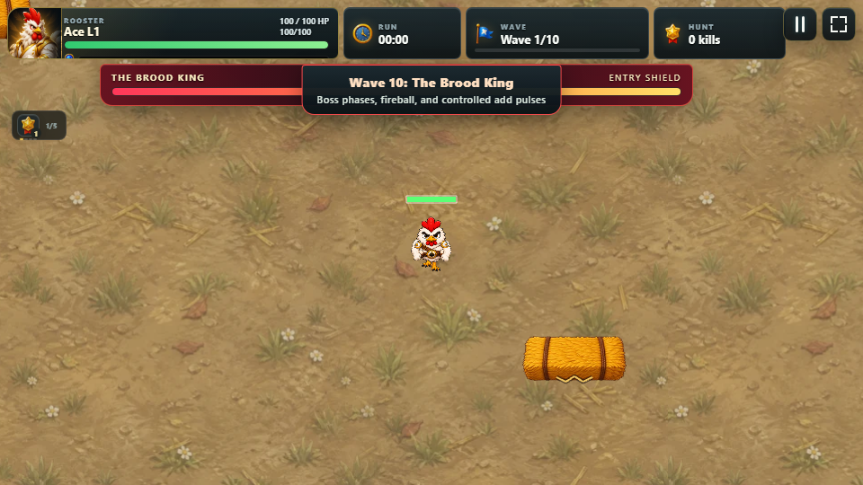
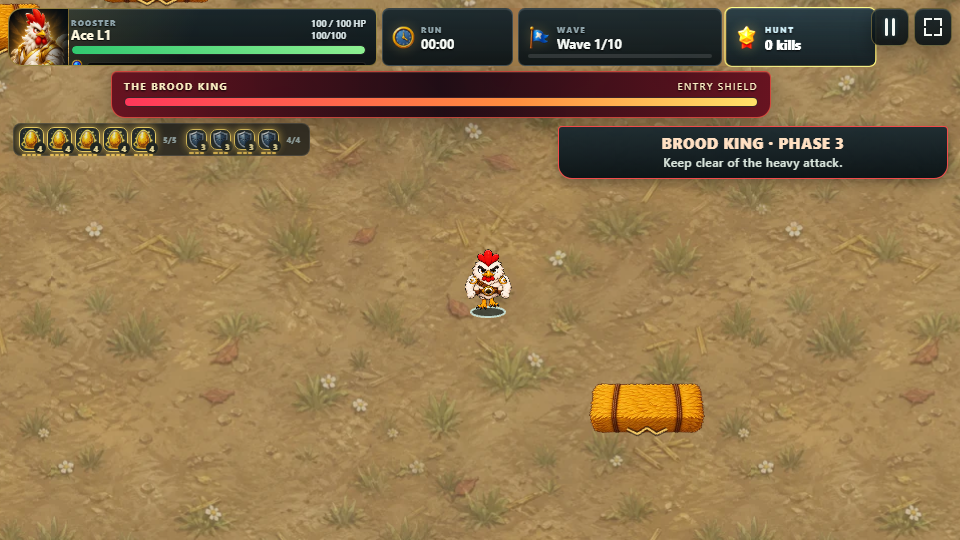
Vergleichbarkeit: Vorbereitete Layoutzustände mit unterschiedlichen Meldungen und Loadouts. Rechts sind fünf aktive und vier passive Plätze belegt. Beurteilt wird die Platzverteilung, nicht der Kampfverlauf.
Nachher klar besser
Links liegt die Meldung direkt über dem Bossbalken. Rechts sind Bossname, HP und Status frei; die Warnung sitzt unterhalb des Balkens neben dem Loadout. Das trennt Dauerinformation und kurzfristigen Hinweis sichtbar besser.
Abwägung / offen: Der freie Mittelbereich ist gut. Auch an den Bildschirmrändern muss die Figur Vorrang haben; den entsprechenden Randfall zeigt Vergleich 06.
PAKET 2 · 960 × 540 CSS-PIXEL
Bosskampf · reguläre Welle 10
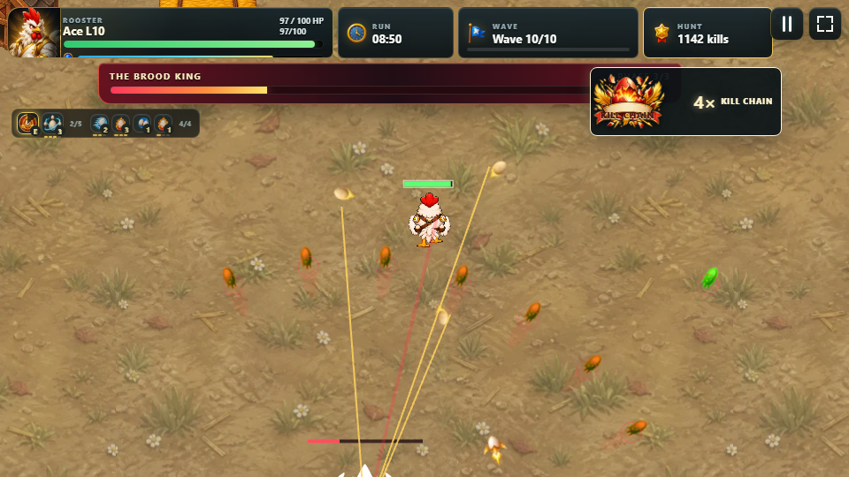
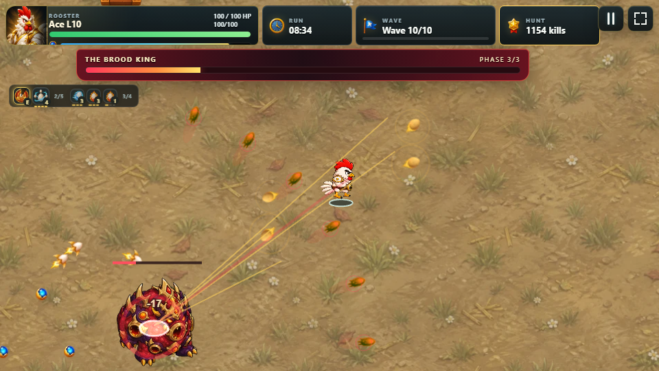
Vergleichbarkeit: Ace, Harvest Yard und Welle 10 in regulären Läufen. Unterschiedliche Zeitpunkte (08:50 / 08:34), HP und Kampfsituationen; kein synchroner A/B-Kampf.
Nachher besser lesbar
Der alte große Kill-Sticker verdeckt rechts einen Teil der Bossinformation. Im neuen Bild bleiben Bossphase und HP frei, die Figur trägt keinen zusätzlichen HP-Balken. Diese Hierarchie ist für einen anspruchsvollen Bosskampf sinnvoller.
Abwägung / offen: Rechts ist gerade keine Kill-Meldung aktiv. Ihr Verhalten während einer Meldung wird deshalb zusätzlich über die vorbereiteten Layout- und Überdeckungstests belegt. Weniger Projektile oder ein anderer Bossstand sind keine bewiesenen Verbesserungen.
PAKET 2 · 960 × 540 CSS-PIXEL
Gegner-HP · volle Kampfszene in Feed Alley
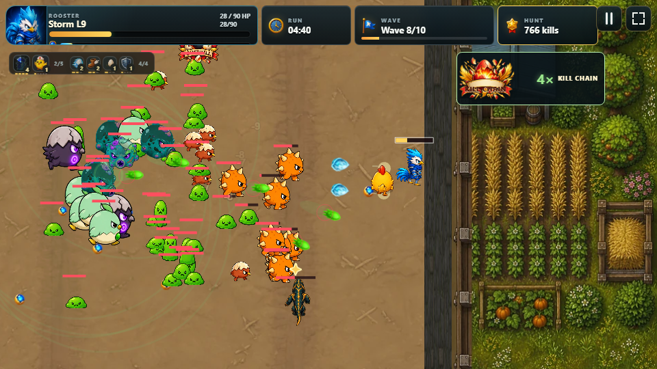
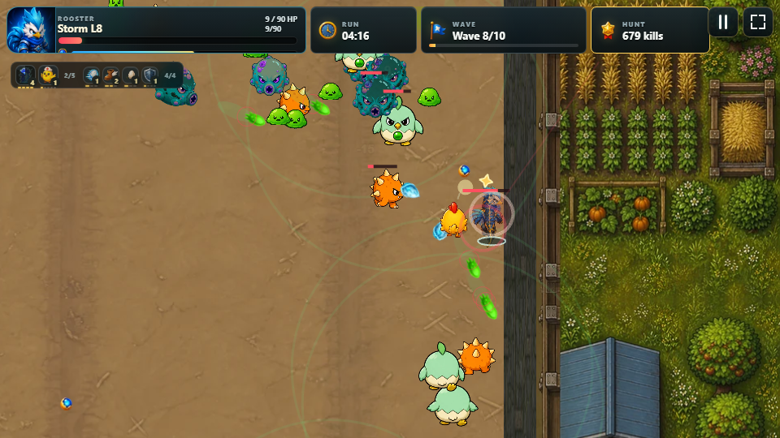
Vergleichbarkeit: Storm, Feed Alley, Welle 8. Unterschiedliche Zeitpunkte (04:40 / 04:16), Level, Gegnerzahl und Builds. Die geringere Gegnerzahl rechts ist kein Ergebnis der HP-Anzeige.
AUTO ist die bessere Voreinstellung
Volle Balken über fast jedem Gegner erzeugen links ein rotes Muster, das mit Figuren und Gefahren konkurriert. AUTO zeigt normale Gegner nach Treffern für 1,6 Sekunden; Eliten und Bosse bleiben ablesbar. Das erhält relevante Information und reduziert die dauerhafte Unruhe.
Abwägung / offen: Die Trefferanimation macht Storm rechts teilweise transparent. Der Bodenmarker hilft beim Lokalisieren, ersetzt aber keine Geräteprüfung. ALWAYS als Option ist sinnvoll für Spieler, die sämtliche regulären Balken bevorzugen.
PAKET 2 · 390 × 844 CSS-PIXEL
Meldung über der Figur · korrigierter Randfall
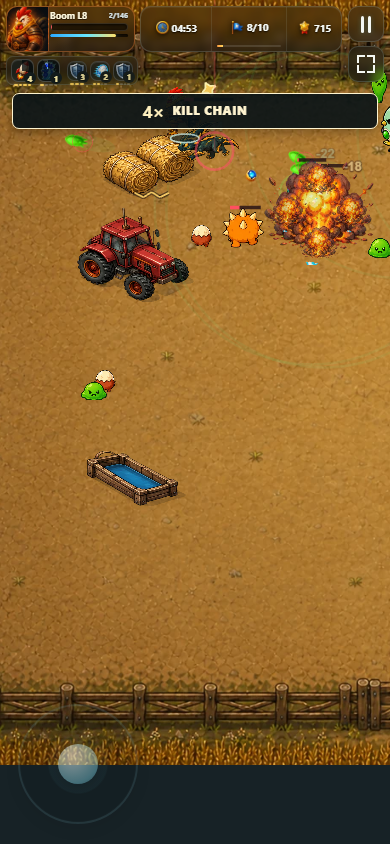
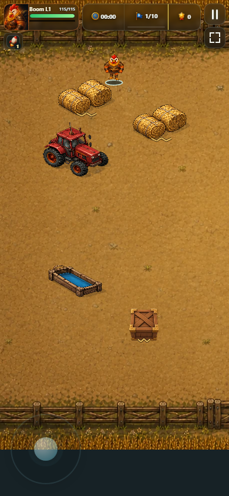
Vergleichbarkeit: Links natürlicher Kampf in Welle 8, rechts vorbereitete Welle 1 mit nachgestellter Spielerposition. Kein Vorher-/Nachher-Vergleich derselben vollständigen Kampfszene.
Die Korrektur ist notwendig und besser
Links verdeckt die Kill-Serie den oberen Teil der Figur nahe dem HUD. Im Abschlussstand wartet eine Meldung, wenn sie die Figur überdecken würde. Rechts bleibt Artillery frei sichtbar. Diese Priorität ist richtig: Die Position des Spielers ist wichtiger als eine Kill-Bestätigung.
Abwägung / offen: Die leerere Arena und die anderen HP rechts stammen aus dem Testaufbau. Daraus lässt sich keine bessere Lesbarkeit einer gesamten späten Welle ableiten.
PAKET 2 · 960 × 540 CSS-PIXEL
Settings · Gegner-HP als Wahlmöglichkeit
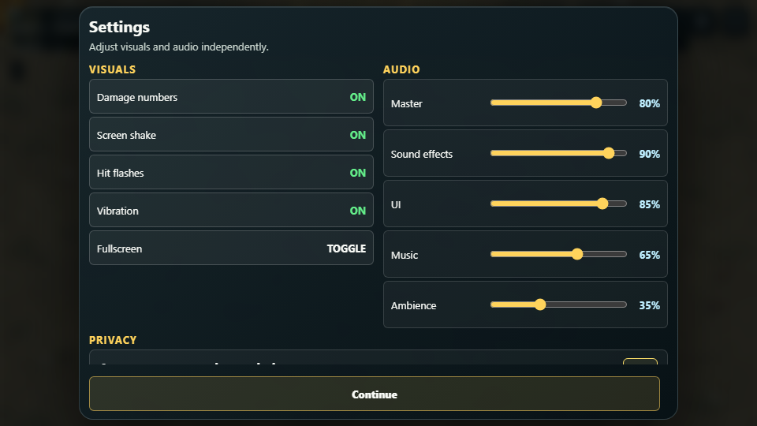
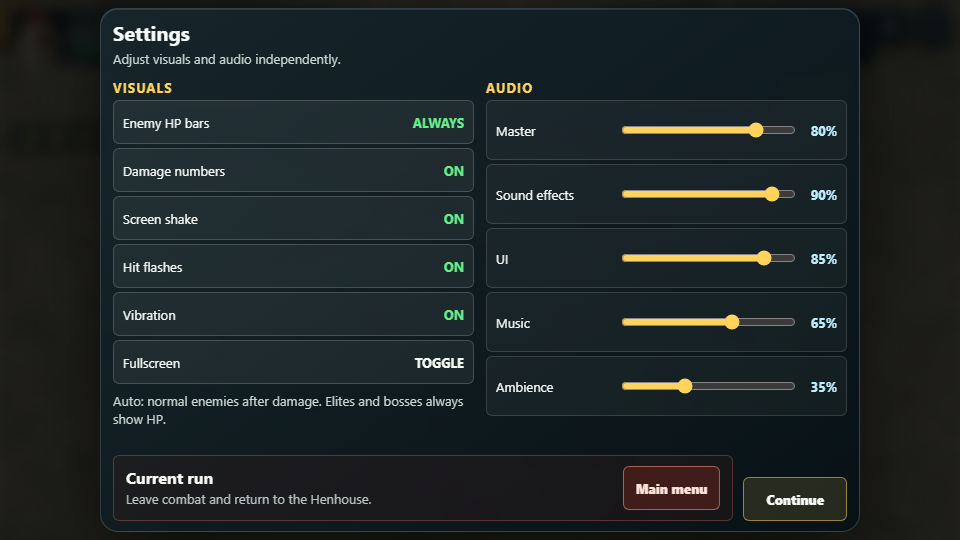
Vergleichbarkeit: Gleiche Fenstergröße, unterschiedliche Aufrufkontexte. Deshalb ist rechts „Main menu“ sichtbar. ALWAYS ist hier zur Prüfung ausgewählt; die Voreinstellung ist AUTO.
Die neue Option ist sinnvoll
Die Option steht weit oben und erklärt das AUTO-Verhalten. Ich würde AUTO als Standard behalten und ALWAYS anbieten: ruhiges Bild für den Einstieg, vollständige Balken auf Wunsch. Ein einziges AN/AUS wäre weniger passend, weil wichtige Elite-/Bossinformationen erhalten bleiben sollen.
Abwägung / offen: Der Screenshot zeigt den gewählten Wert, nicht das Standardverhalten. Die Settings sind weiterhin ein funktionales Menü; diese Erweiterung allein ist keine neue visuelle Gestaltung.
Paket 1 · Menüs, Charakterwahl und Upgrades
PAKET 1 · 960 × 540 CSS-PIXEL
Upgradeauswahl · Desktop mit EVO-Rezepten
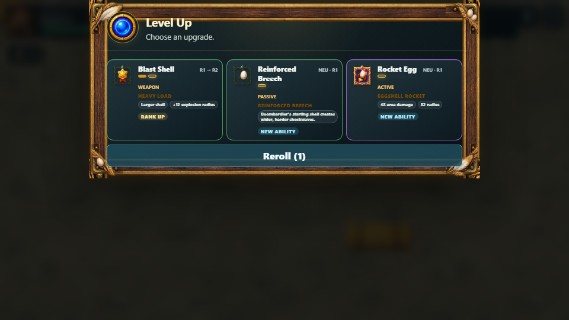
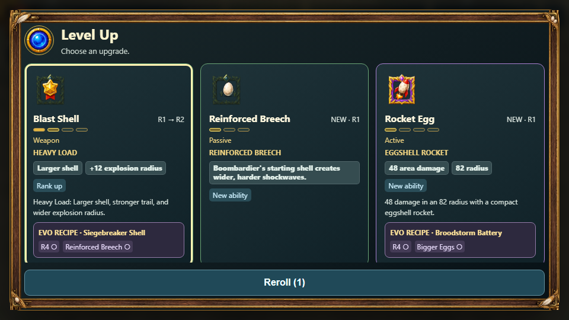
Vergleichbarkeit: Gleiche Fenstergröße und dieselben drei Upgradeangebote.
Nachher klar besser
Vorher sind Karten und Effekttexte unnötig klein und der Rahmen liegt am oberen Rand. Nachher nutzt der Dialog die verfügbare Fläche; Namen, Wirkungen und EVO-Bedingungen sind tatsächlich lesbar. Alle drei Angebote bleiben nebeneinander vergleichbar, Reroll hat einen festen Platz.
Abwägung / offen: Mehr Beschreibung macht die Karten inhaltlich dichter. Noch kürzere, konsistente Effekttexte wären ein sinnvoller späterer Feinschliff, ohne wichtige Regeln zu verstecken.
PAKET 1 · 844 × 390 CSS-PIXEL
Upgradeauswahl · kurzes Handy-Querformat
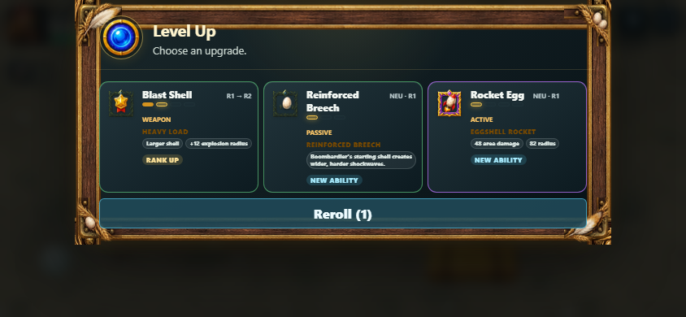
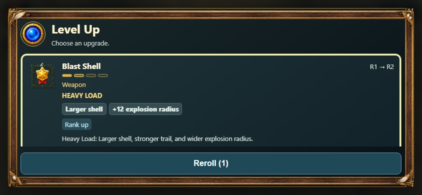
Vergleichbarkeit: Gleiche Fenstergröße und dieselben Angebote; jeweils oberste Scrollposition.
Lesbarkeit besser; Überblick schlechter
Links sind alle drei Angebote auf einmal sichtbar, aber die Texte sehr klein. Rechts ist ein Angebot deutlich besser lesbar, der Rahmen bleibt im Fenster und Reroll erreichbar. Für Touchbedienung würde ich die neue Variante bevorzugen.
Abwägung / offen: Der direkte Vergleich aller drei Angebote erfordert jetzt Scrollen. Das ist die größte Abwägung im Menüpaket. Bei der Geräteabnahme sollte geprüft werden, ob Nutzer die weiteren Angebote ohne Erklärung entdecken.
PAKET 1 · 1440 × 900 CSS-PIXEL
Bossbelohnung · großes Fenster
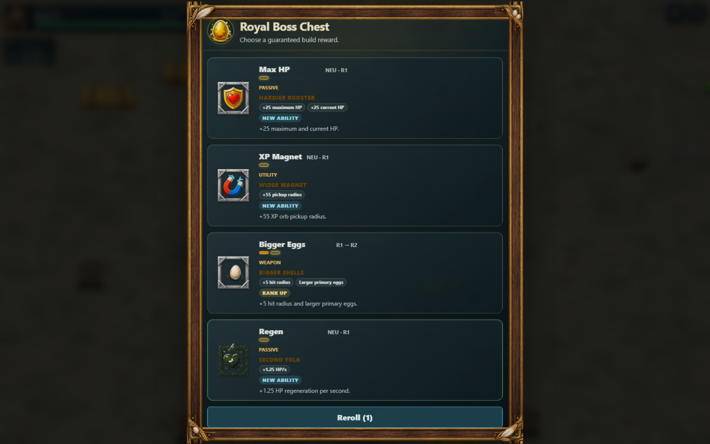
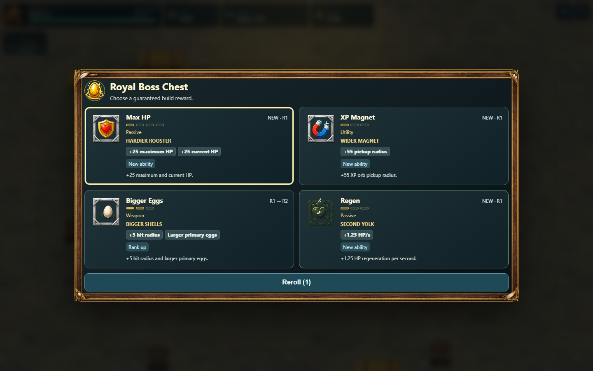
Vergleichbarkeit: Gleiche Fenstergröße und dieselben vier Belohnungen.
Nachher klar besser
Die alte Liste erstreckt sich fast über die gesamte Fensterhöhe. Das neue Raster nutzt die Breite, zeigt alle vier Optionen kompakter und rückt die Entscheidung in die Bildschirmmitte. Schrift und Auswahlrahmen sind besser erkennbar.
Abwägung / offen: Der dekorative Rahmen bleibt derselbe. Der Gewinn liegt in Proportion, Lesbarkeit und Vergleichbarkeit, nicht in einer neuen Art Direction.
PAKET 1 · 960 × 540 CSS-PIXEL
Bossbelohnung · kleiner Desktop
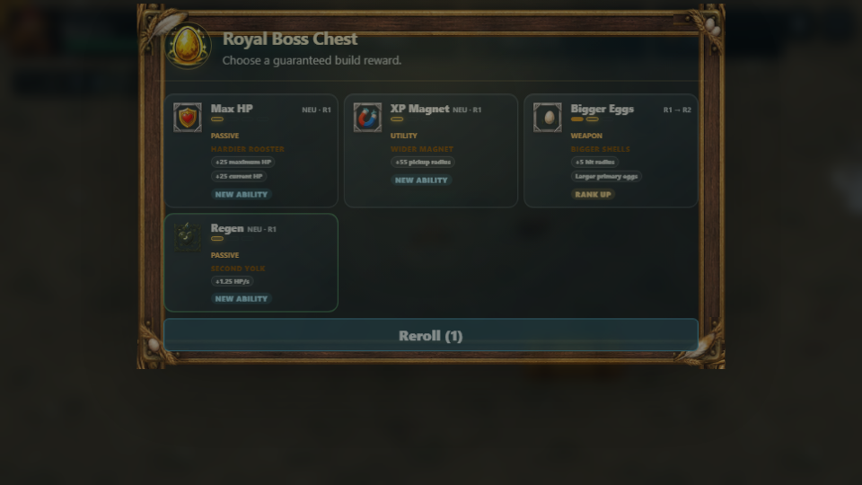
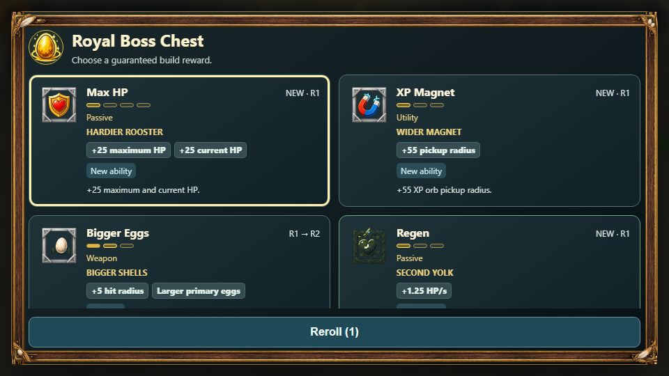
Vergleichbarkeit: Gleiche Fenstergröße und dieselben vier Belohnungen; jeweils oberste Scrollposition.
Nachher lesbarer; Scrollen erforderlich
Das ungleichmäßige alte Raster wirkt klein und schwer lesbar. Größere Karten und zwei gleich breite Spalten geben den Belohnungen eine klarere Ordnung. Der Reroll-Button bleibt unabhängig von den Karten zugänglich.
Abwägung / offen: Die unteren Kartendetails sind im neuen Bild angeschnitten und müssen gescrollt werden. Ich bevorzuge die Lesbarkeit, würde diesen Punkt aber nicht als uneingeschränkten Gewinn an Übersicht verkaufen.
PAKET 1 · 1440 × 900 CSS-PIXEL
Charakterauswahl · Porträts und Namen
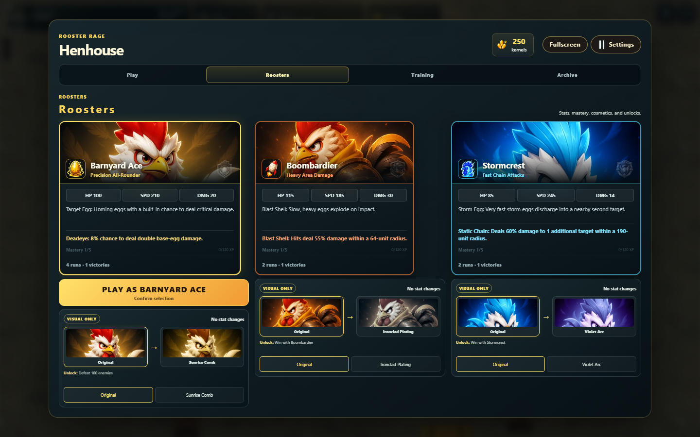
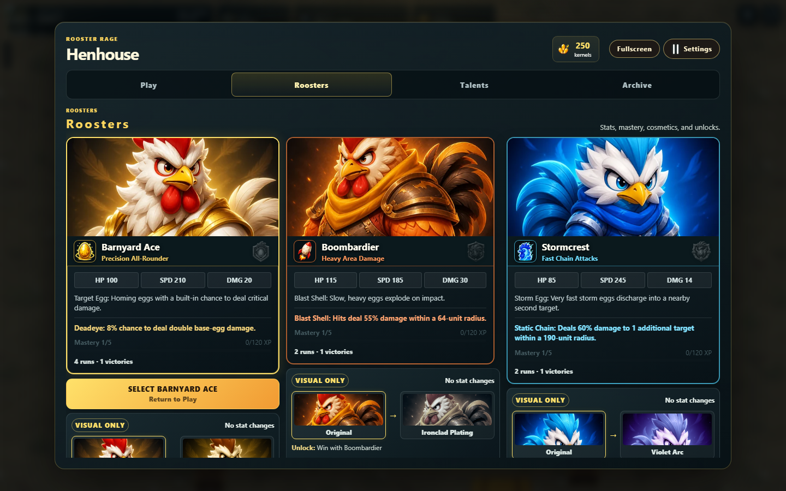
Vergleichbarkeit: Gleiche Fenstergröße, dieselben freigeschalteten Hähne und dieselben Porträtassets.
Nachher der stärkere visuelle Auftritt
Gesichter werden gezielter eingerahmt; besonders Storm ist besser erkennbar. Der Name liegt unter dem Porträt statt über dem Gesicht. Größere Texte und „SELECT“ statt „PLAY AS“ machen Figur und Aktion verständlicher. Hier ist der Gewinn an Präsentationsqualität besonders deutlich.
Abwägung / offen: Die höheren Karten verschieben Kosmetik weiter nach unten. Das verbessert den ersten Eindruck der Hähne, verringert aber die gleichzeitig sichtbaren Inhalte.
PAKET 1 · 390 × 844 CSS-PIXEL
Talentdetail · Handy-Hochformat
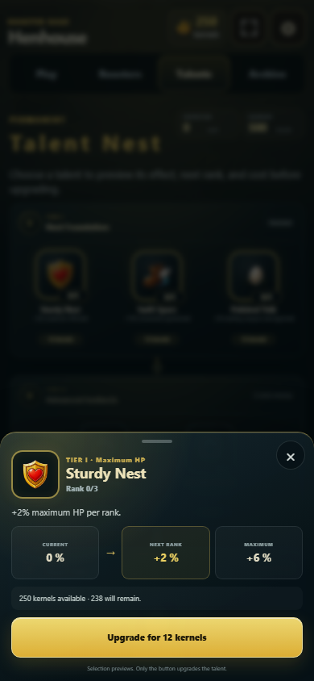
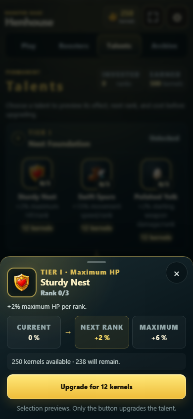
Vergleichbarkeit: Gleiche Fenstergröße, dasselbe Talent, derselbe Rang und dieselben Kosten.
Nachher besser lesbar, kleiner optischer Sprung
Aktueller Wert, nächster Rang, Maximum und Restwährung sind klarer beschriftet. Die erklärende Fußzeile ist lesbar, Schließen und Upgrade sind gut erreichbar. Das verbessert das sichere Verstehen eines Kaufs.
Abwägung / offen: Die alte Variante hatte bereits eine brauchbare Grundstruktur. Hier wurde vor allem Typografie und Bedienbarkeit verfeinert; es ist kein grundlegendes Redesign.
PAKET 1 · 844 × 390 CSS-PIXEL
Settings · kurzes Handy-Querformat
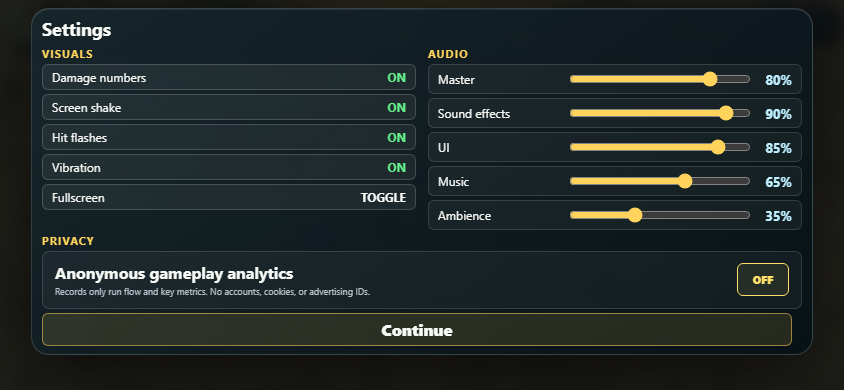
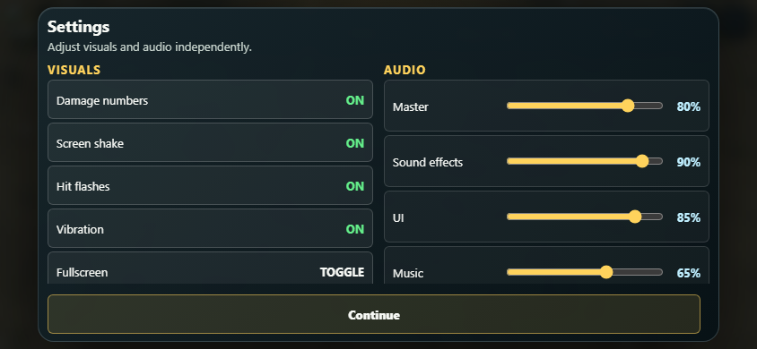
Vergleichbarkeit: Gleiche Fenstergröße und Settings im Hauptmenü; jeweils oberste Scrollposition.
Bedienbarkeit besser; Kompaktheit schlechter
Größere Zeilen, lesbarere Texte und ein fest erreichbares Continue sind für die Touchbedienung sinnvoll. Die zwei Spalten bleiben nachvollziehbar nach Grafik und Audio getrennt.
Abwägung / offen: Ambience und Privacy sind rechts erst nach Scrollen erreichbar. Die alte Ansicht war kompakter. Für den Portalrelease würde ich die größeren Ziele bevorzugen, aber eine gut erkennbare Scrollmöglichkeit auf echten Geräten prüfen.